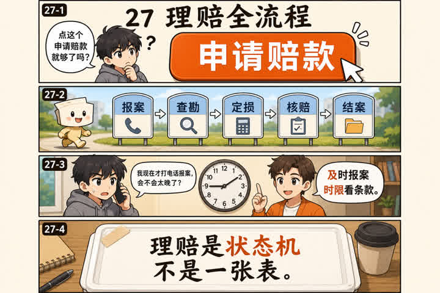
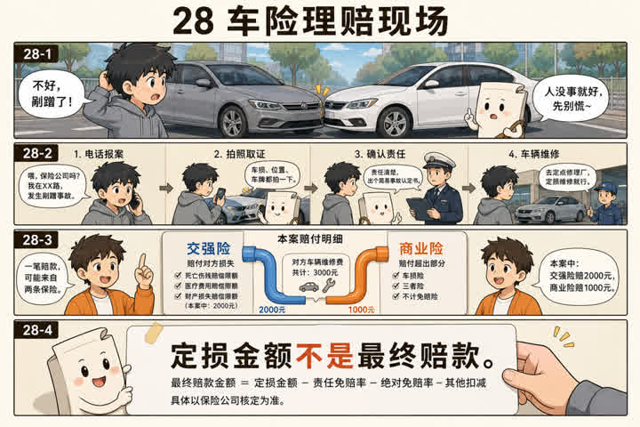
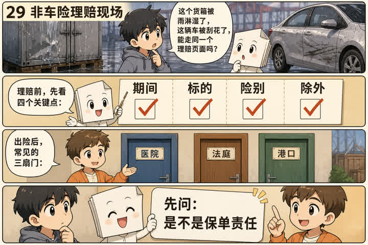
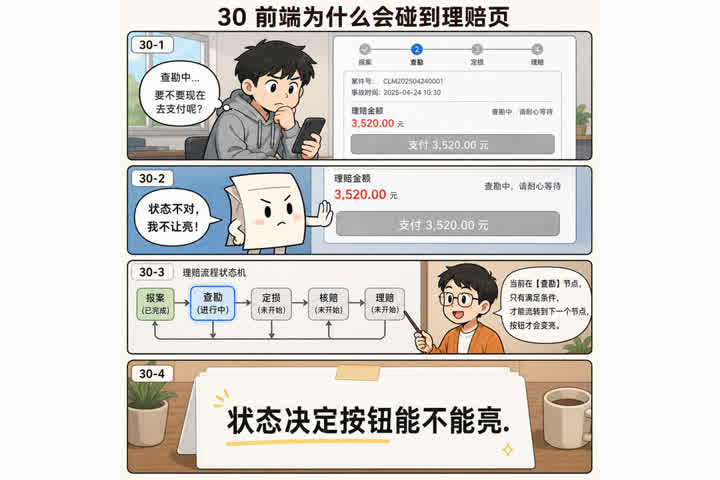

27理赔全流程

记住这一句
报案 → 查勘 → 定损 → 核赔 → 结案支付。中间常要交材料。每一步都是案件状态，不是一张表。
前端会碰到
理赔页是状态机。当前状态决定能亮哪些按钮，不要把所有操作一排摆出来。

报案 → 查勘 → 定损 → 核赔 → 结案支付。中间常要交材料。每一步都是案件状态，不是一张表。
理赔页是状态机。当前状态决定能亮哪些按钮，不要把所有操作一排摆出来。

先处理人，再处理车。交强险和商业险可能分项赔。定损金额不是最终赔款，核赔才会拍板。
车险理赔最少要串：报案号、责任认定、查勘照片、定损单、维修/赔款账户。定损中不要显示「已赔付」。

非车险先问：这是不是保单责任。货损、意外、责任，查勘对象完全不同。
非车险理赔的立案信息是保单号+出险经过+标的损失，不要套用车辆查勘组件。

理赔对前端的核心不是表单，是状态：案件到哪一步，谁能看、谁能点、超时要提示。
用明确的状态枚举驱动 UI。把「查勘中不能申请支付」做成规则，而不是隐藏的约定。